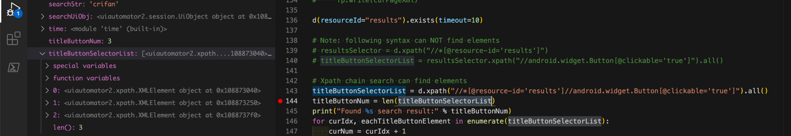

xpath
xpath本身是一套独立的技术，常用于web领域内。
此处uiautomator2也支持xpath，用于元素定位，可以实现复杂条件的元素的查找。
xpath实际用法举例
想要找到百度搜索结果的results下面的button，则对应语法是：
titleButtonSelectorList = d.xpath("//*[@resource-id='results']//android.widget.Button[@clickable='true']").all()
即可找到对应元素的列表

注意：
分开写
resultsSelector = d.xpath("//*[@resource-id='results']")
titleButtonSelectorList = resultsSelector.xpath("//android.widget.Button[@clickable='true']").all()
却就是找不到元素。
具体原因，暂时未知。
xpath常见操作
定位节点和操作节点
tbsNodeList = self.driver.xpath("//com.tencent.tbs.core.webkit.WebView").all()
xpath的all()返回的是XMLElement而不是XPathSelector
self.driver.xpath("//com.tencent.tbs.core.webkit.WebView")返回的是uiautomator2.xpath.XPathSelector
而加上了all()后
self.driver.xpath("//com.tencent.tbs.core.webkit.WebView").all()
则返回的是：uiautomator2.xpath.XMLElement的list了
即，每一个都是uiautomator2.xpath.XMLElement，而不是uiautomator2.xpath.XPathSelector
其中每一个都是uiautomator2.xpath.XMLElement
然后就可以去操作属性了：
获取属性content-desc的值
eachXmlElem.attrib.get("content-desc", "")
给属性content-desc设置值
eachXmlElem.attrib["content-desc"] = "add something to avoid NAF"
删除一个属性
eachXmlElem.attrib.pop("NAF")
文档
关于Xpath的详细用法，见官网中的：
- xpath的文档
其内部用的lxml，具体功能和语法都可以参考：
查找元素 相关函数
findAndClickNode：查找当前节点的父级符合条件的节点 并点击
def findAndClickNode(self, curNodeXpath):
"""
寻找可以clickable=true的当前或父级元素，并点击
注：主要用于当节点clickable=false，点击无效时，使用此方法
"""
foundAndClicked = False
matchDict = {"clickable": "true"}
clickableParentNode = self.findParentNode(curNodeXpath=curNodeXpath, matchDict=matchDict)
if clickableParentNode:
foundNodeAttrib = clickableParentNode.attrib
clickableParentNode.click()
foundAndClicked = True
logging.info("clicked element [%s] found by [xpath=%s, match=%s]", foundNodeAttrib, curNodeXpath, matchDict)
else:
logging.warning("Fail click %s for not found %s(parent) node", curNodeXpath, matchDict)
return foundAndClicked
调用：
if curNodeXpath:
foundAndClicked = self.findAndClickNode(curNodeXpath)
相关函数：
findParentNode：寻找父节点
def findParentNode(self, curNodeXpath, matchDict, maxUpLevel=3):
"""
寻找符合特定条件的父级节点，最多向上找3级
如果当前节点符合条件，则返回当前节点
"""
matchNode = None
try:
curNode = self.driver.xpath(curNodeXpath).get()
curNodeAttrib = curNode.attrib # .attrib contain 'clickable'
# curNodeInfo = curNode.info # .info not contain 'clickable'
isCurMatch = self.isMatchNode(curNodeAttrib, matchDict)
if isCurMatch:
# current is match
matchNode = curNode
else:
# try parent nodes
curUpLevel = 1
curParentNodeXpath = curNodeXpath
while(curUpLevel <= maxUpLevel):
curParentNodeXpath += "/.."
curParentNode = self.driver.xpath(curParentNodeXpath).get()
curParentNodeAttrib = curParentNode.attrib
isCurParentMatch = self.isMatchNode(curParentNodeAttrib, matchDict)
if isCurParentMatch:
matchNode = curParentNode
break
curUpLevel += 1
except XPathElementNotFoundError as xpathNotFoundErr:
logging.error("XPathElementNotFoundError: %s", xpathNotFoundErr)
if not matchNode:
logging.warning("Not found match parent for xpath=%s and match=%s", curNodeXpath, matchDict)
return matchNode
isMatchNode：节点是否匹配
def isMatchNode(self, curNodeAttrib, toMathInfo):
"""判断当前节点属性是否满足条件"""
isAllMatch = True
for eachKey, eachToMatchValue in toMathInfo.items():
if eachKey not in curNodeAttrib:
isAllMatch = False
break
curValue = curNodeAttrib[eachKey]
if curValue != eachToMatchValue:
isAllMatch = False
break
return isAllMatch
findAndClickTextNode：寻找节点并点击
def findAndClickTextNode(self, text):
"""
对于text类型节点：android.widget.TextView, text=xxx
寻找可以clickable=true的当前或父级元素，并点击
注：主要用于当text=xxx的节点clickable=false，点击无效时，使用此方法
"""
curTextNodeXpath = "//android.widget.TextView[@text='%s']" % text
self.findAndClickNode(curTextNodeXpath)
xpathFindElement：用xpath查找元素
def xpathFindElement(self, curClass=None, curId=None, curBounds=None):
"""
find element by xpath
return value type
is: u2.xpath.XMLElement
not: u2.session.UiObject
"""
foundElement = None
curXpath = self.generateElementXpath(curClass=curClass, curId=curId, curBounds=curBounds)
try:
foundElement = self.driver.xpath(curXpath).get()
except XPathElementNotFoundError as xpathNotFoundErr:
logging.error("XPathElementNotFoundError: %s from %s", xpathNotFoundErr, curXpath)
return foundElement
调用：
（1）
foundElement = self.xpathFindElement(curClass=locatorClass, curId=locatorId, curBounds=locatorBounds)
相关函数：
generateElementXpath：生成元素xpath
def generateElementXpath(self, curClass=None, curId=None, curBounds=None):
"""generate element xpath"""
# nodeXpath = ""
# if locatorClass:
# nodeXpath = "//%s[@bounds='%s']" % (locatorClass, locatorBounds) # "//android.widget.TextView[@bounds='[191,2060][430,2135]']"
# elif locatorId:
# nodeXpath = "//*[@resource-id='%s' and @bounds='%s']" % (locatorId, locatorBounds)
# else:
# nodeXpath = "//*[@bounds='%s'" % locatorBounds
classRule = "*"
if curClass:
classRule = curClass # 'android.widget.ImageView'
propertyRule = ""
if curId:
propertyRule += "@resource-id='%s'" % curId
# "@resource-id='com.netease.newsreader.activity:id/hs'"
if curBounds:
if propertyRule:
propertyRule += " and "
propertyRule += "@bounds='%s'" % curBounds
# "@resource-id='com.netease.newsreader.activity:id/hs' and @bounds='[75,2098][141,2134]'"
# TODO: add other support: text, desc, instance, ...
curXpath = "//%s[%s]" % (classRule, propertyRule)
# "//android.widget.ImageView[@resource-id='com.netease.newsreader.activity:id/hs' and @bounds='[75,2098][141,2134]']"
return curXpath
调用：
curClassname = None
curResId = None
curBoundsStr = None
# curAttrib = foundElement.attrib
# AttributeError: 'UiObject' object has no attribute 'attrib'
if hasattr(foundElement, "attrib"):
curAttrib = foundElement.attrib
# {'index': '0', 'text': '', 'resource-id': 'com.netease.newsreader.activity:id/hs', 'package': 'com.netease.newsreader.activity', 'content-desc': '', 'checkable': 'false', 'checked': 'false', 'clickable': 'false', 'enabled': 'true', 'focusable': 'false', 'focused': 'false', 'scrollable': 'false', 'long-clickable': 'false', 'password': 'false', 'selected': 'true', 'visible-to-user': 'true', 'bounds': '[75,2098][141,2134]'}
curResId = curAttrib["resource-id"]
curBoundsStr = curAttrib["bounds"]
else:
# # for debug
# self.debugPrintElement(foundElement, "no attrib")
logging.debug("")
curInfo = foundElement.info
# {'bounds': {'bottom': 2134, 'left': 75, 'right': 141, 'top': 2098}, 'className': 'android.widget.ImageView', 'contentDescription': '', 'enabled': 'true', 'focusable': 'false', 'focused': 'false', 'longClickable': 'false', 'packageName': 'com.netease.newsrea....activity', 'scrollable': 'false', 'selected': 'true', 'text': ''}
if not curClassname:
curClassname = curInfo["className"] # 'android.widget.ImageView'
if not curBoundsStr:
boundsDict = curInfo["bounds"]
x0 = boundsDict["left"]
y0 = boundsDict["top"]
x1 = boundsDict["right"]
y1 = boundsDict["bottom"]
curBoundsStr = "[%d,%d][%d,%d]" % (x0, y0, x1, y1)
# '[75,2098][141,2134]'
if not curResId:
if "resourceName" in curInfo:
curResId = curInfo["resourceName"] # 'com.netease.newsreader.activity:id/bn5'
curNodeXpath = self.generateElementXpath(
curClass=curClassname,
curId=curResId,
curBounds=curBoundsStr,
)
查找元素
def find_element_Android(self, locator):
"""Android: find element"""
foundElement = None
locatorType = locator.get("type")
locatorText = locator.get("text")
locatorClass = locator.get("class")
locatorDesc = locator.get("desc")
locatorId = locator.get("id")
locatorInstance = locator.get("instance")
locatorBounds = locator.get("bounds")
if locatorType:
if locatorType == "text":
foundElement = self.driver(text=locatorText)
elif locatorType == "desc":
foundElement = self.driver(description=locatorDesc)
elif locatorType == "id":
foundElement = self.driver(resourceId=locatorId)
elif locatorType == "id+bounds":
foundElement = self.xpathFindElement(curClass=locatorClass, curId=locatorId, curBounds=locatorBounds)
elif locatorType == "class+bounds":
foundElement = self.xpathFindElement(curClass=locatorClass, curBounds=locatorBounds)
elif locatorType == "id+text":
foundElement = self.driver(resourceId=locatorId,text=locatorText)
elif locatorType == "id+desc":
foundElement = self.driver(resourceId=locatorId,description=locatorDesc)
elif locatorType == "class+instance":
# foundElement = self.driver(className=locator["class"], instance=locatorInstance)
instanceInt = int(locatorInstance)
# foundElement = self.driver(className=locatorClass, instance=instanceInt)
foundElementList = self.driver(className=locatorClass)
if foundElementList:
curIdx = instanceInt
shouldMaxNumber = curIdx + 1
if foundElementList.count >= shouldMaxNumber:
foundElement = foundElementList[curIdx]
if not foundElement:
if locatorText:
foundElement = self.driver(text=locatorText)
elif locatorClass:
foundElement = self.driver(className=locatorClass)
elif locatorDesc:
foundElement = self.driver(description=locatorDesc)
elif locatorId:
foundElement = self.driver(resourceId=locatorId)
elif locatorInstance:
foundElement = self.driver(instance=locatorInstance)
elif locatorBounds:
foundElement = self.xpathFindElement(curBounds=locatorBounds)
return foundElement
调用：
EditTextClass = "android.widget.EditText"
curBounds = ""
if self.isAndroid:
curLeft = eachEditTextLocation[0]
curTop = eachEditTextLocation[1]
curRight = curLeft + eachEditTextLocation[2]
curBottom = curTop + eachEditTextLocation[3]
curBounds = "[%s,%s][%s,%s]" % (curLeft, curTop, curRight, curBottom) # [191,2060][430,2135], '[939,423][1621,558]', '[939,569][1621,701]'
# foundElement = self.xpathFindElement(curClass=EditTextClass, curBounds=curBounds)
editTextLocator = {
"type": "class+bounds",
"class": EditTextClass, # 'android.widget.EditText'
"bounds": curBounds, # '[939,423][1621,558]'
}
foundElement = self.find_element_Android(editTextLocator)
# Note: Not use follow wait_element_setText, for it only support type=text
# isSetOk = self.wait_element_setText(editTextLocator, curInputValue)
if foundElement:
foundElement.set_text(curInputValue)